Product & Systems Architect — Oleksandr Shevchuk (Cyberdayag)
Summary: replaced a legacy Excel-based system with a modern web application. Development: February — mid-August 2026. Production: since mid-August 2026. Status: production is stable and running without failures; development of
new features and modules continues.
Context and Problem
After I started working with a science education center for physics and chemistry, I found
the organization running on a legacy system built on Excel. It kept crashing, froze under
load, and made daily operational changes painful and error-prone.
Scale of operations:
26 partner schoolsup to 50 lessons per day105 student groupsspecialized laboratoriesfrequent teacher substitutions, cancellations and reschedulesequipment orders
That's exactly why I decided to build a system that would make schedule and resource
management more reliable and predictable. In my free time outside my main job, I built my
own Scheduling System, and in mid-August, just before the new school year, I
deployed and configured a dedicated instance of it for the center, free of charge, to make my
colleagues' daily work easier.
My experience with relational databases shaped the project's core architectural principle:
schedule and resource changes should be handled as transactions, not as simple spreadsheet
edits.
Data integrity was pushed down to the database level, the change history is immutable via an
Audit Log, and the architecture allows safely restoring the schedule state
for any given day.
My Role
After studying the center's business processes, I independently designed the system
architecture: the data model, the core business invariants, the role-based access model,
and the conflict-resolution mechanisms. I also designed the deployment setup (AWS EC2 +
Cloudflare Tunnel) and the backup process (AWS S3), validated through a full
disaster-recovery drill.
I worked with AI as a tech lead: I set the tasks, made the architectural decisions, reviewed
the implementation, and only merged code into the system after a step-by-step review.
System Overview
27
tables in the DB schema
38
PL/pgSQL functions — business logic in the DB
495
commits over 6 months of development
24/7
production availability
An ERP system for schedule and operations management:
Annual template + a generated year-long schedule
Day-level schedule editing with freeze / unfreeze / rollback
PostgreSQL — chosen for native support of EXCLUDE USING GIST. At the
database engine level, this ensures no overlapping time intervals and automatically
rules out race conditions on concurrent requests.
Logic in the database — moving invariants into the database gave a single
source of truth and data integrity regardless of the entry point (API, background jobs, or
a direct admin session).
Node.js + Express — a thin, stateless API gateway limited to
authentication and request routing, with no duplicated business logic.
Vue 3 + PrimeVue — cut time-to-market thanks to a ready-made ecosystem of
complex UI components for admin screens.
Cloudflare Tunnel — isolated the infrastructure on a Zero Trust basis,
removing the need to expose a public IP or open any inbound ports.
Project structure:
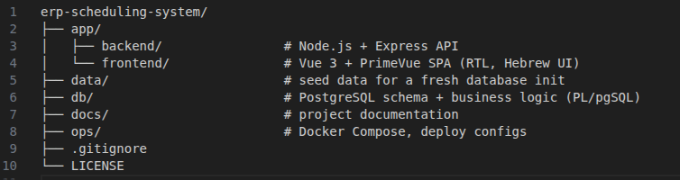
Repository structure — the system was designed from day one with a clean
separation between the application, the database logic, and the infrastructure.
The system in real life:
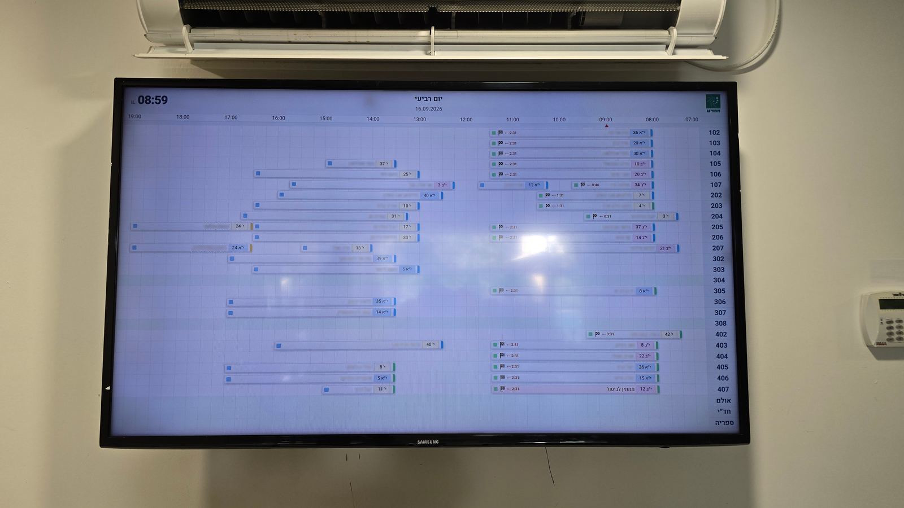
Corridor display in the teachers' room — live, on the wall of the education
center.
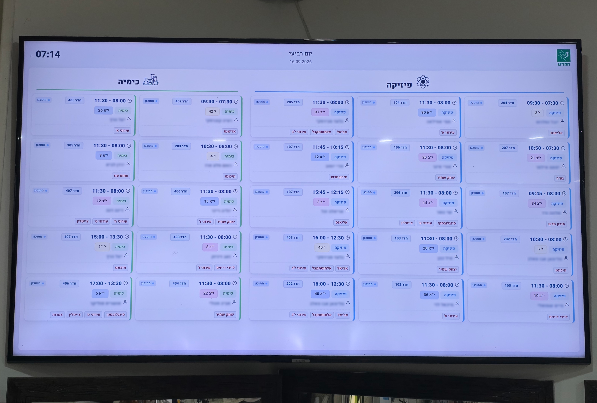
Corridor display for students — live, on the wall of the education center.
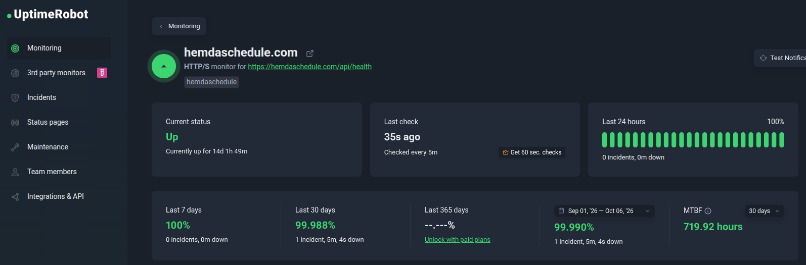
Production monitoring — the system is under continuous external uptime
monitoring. Uptime over the last month — 99.988%. The one recorded incident was a planned
outage during a version deployment, including a database migration and backend/frontend
container restart.
System Interface
Click any screenshot to view it full-size.
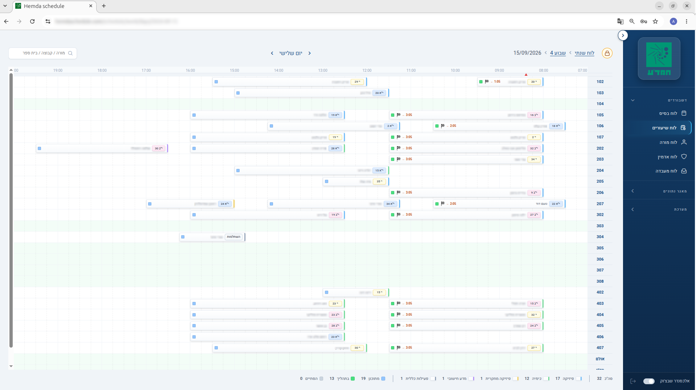
Daily Gantt chart — the day's live schedule by room. Subject color-coding,
substitute highlighting, current-time indicator.
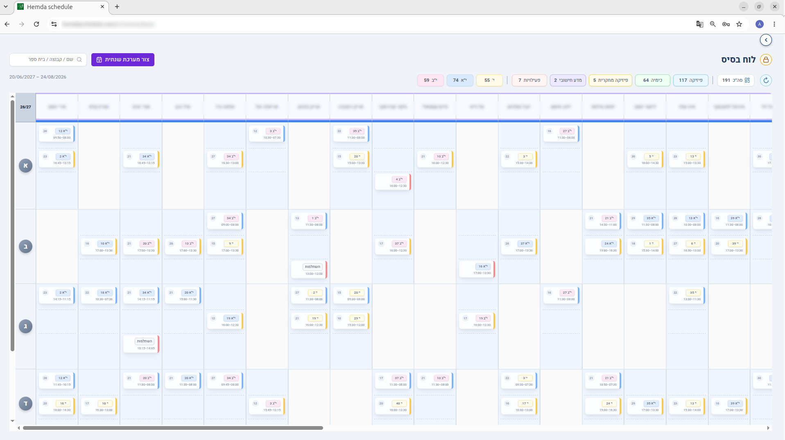
Annual template (Basic Schedule) — the source of truth. Changes propagate
safely to the generated yearly schedule through a two-phase algorithm.
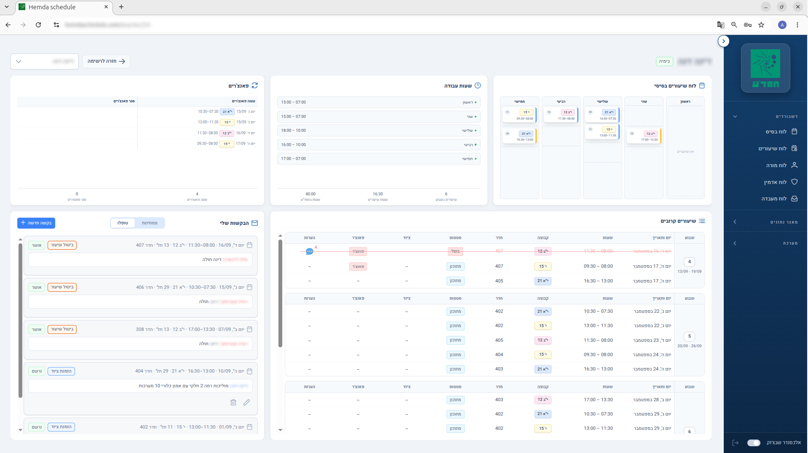
Teacher dashboard — a personal workspace: upcoming lessons, equipment
requests, substitution history, and work schedule.
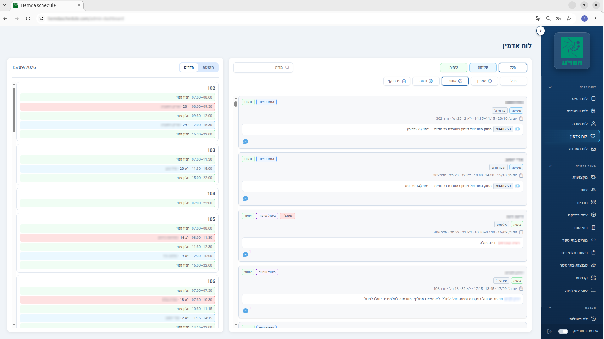
Admin dashboard — the central "single window." Teachers only submit
requests; admins review, adjust, and apply the changes.
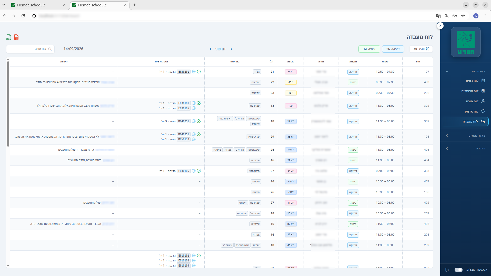
Lab assistant dashboard — an operational overview: equipment orders and
notes for a selected day.
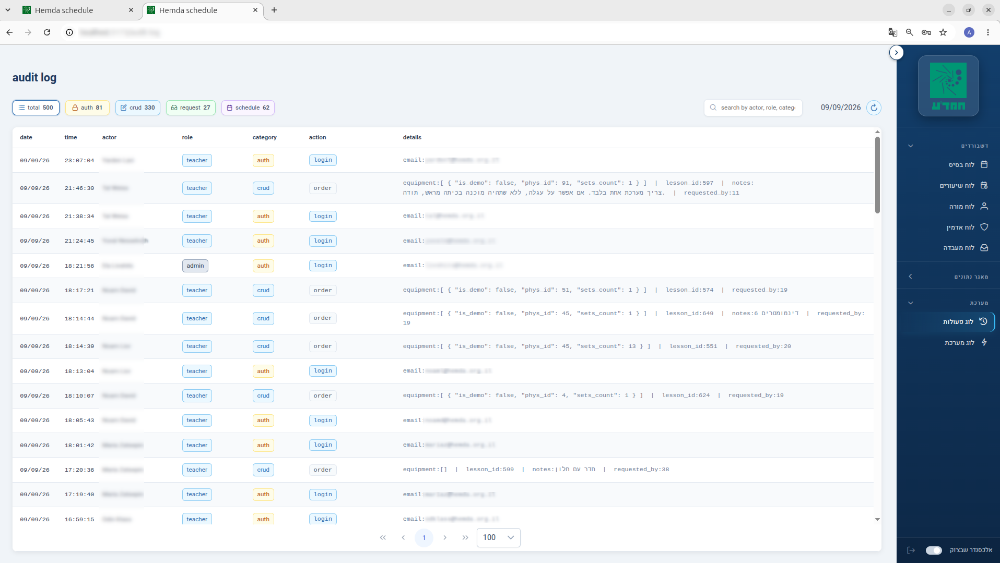
Audit log — a fully immutable history of every significant action. Even a
superadmin cannot edit or delete a record.
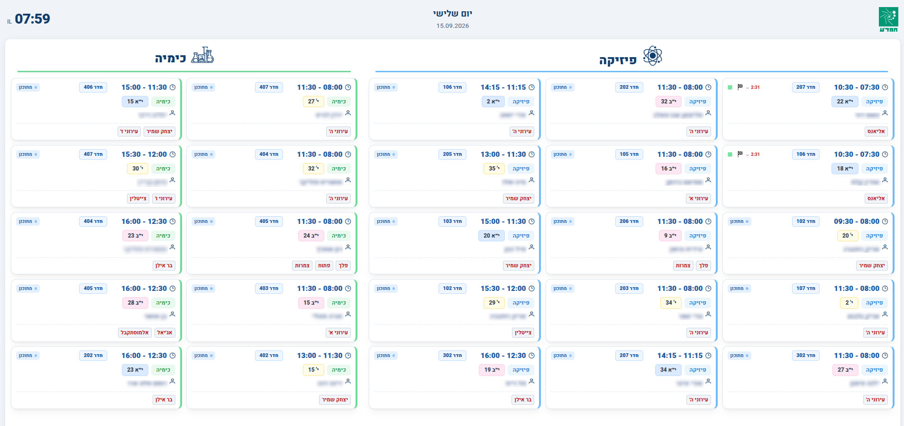
Display board for students — a public screen with the live schedule.
Engineering Culture — Code and Documentation
One of the project's core principles: logic and decisions are explained directly in the
code — not only what a function does, but why it exists and what breaks if
the invariant is violated.
1. Clear separation of structure and business logic
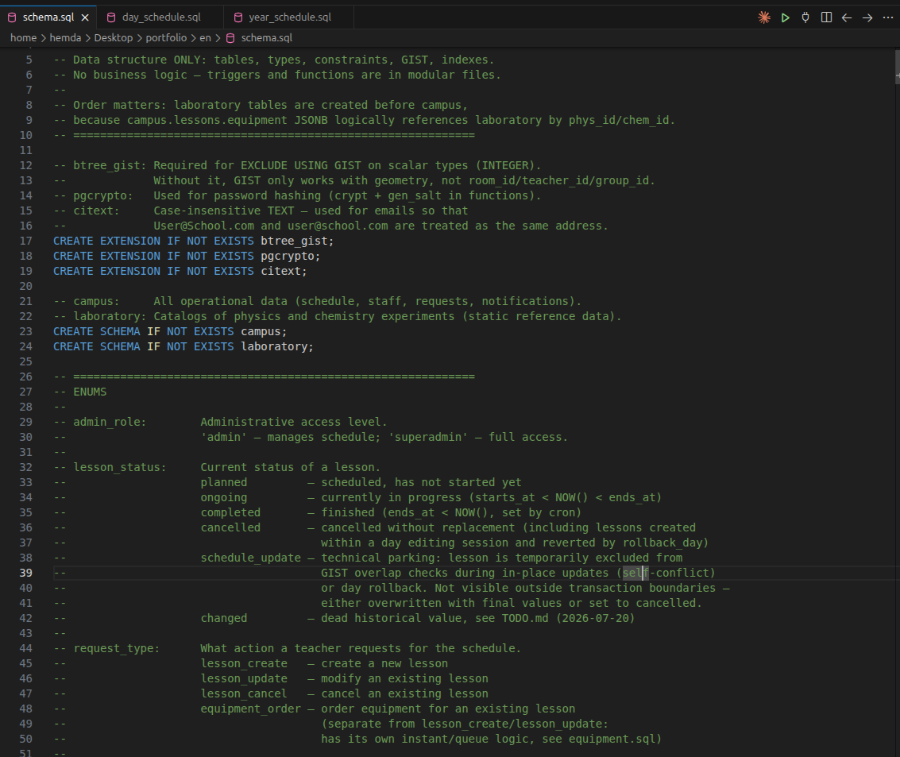
schema.sql — an explicit rule: this file holds structure only. Business
logic lives in the modular files.
2. Room assignment with explicit business rules
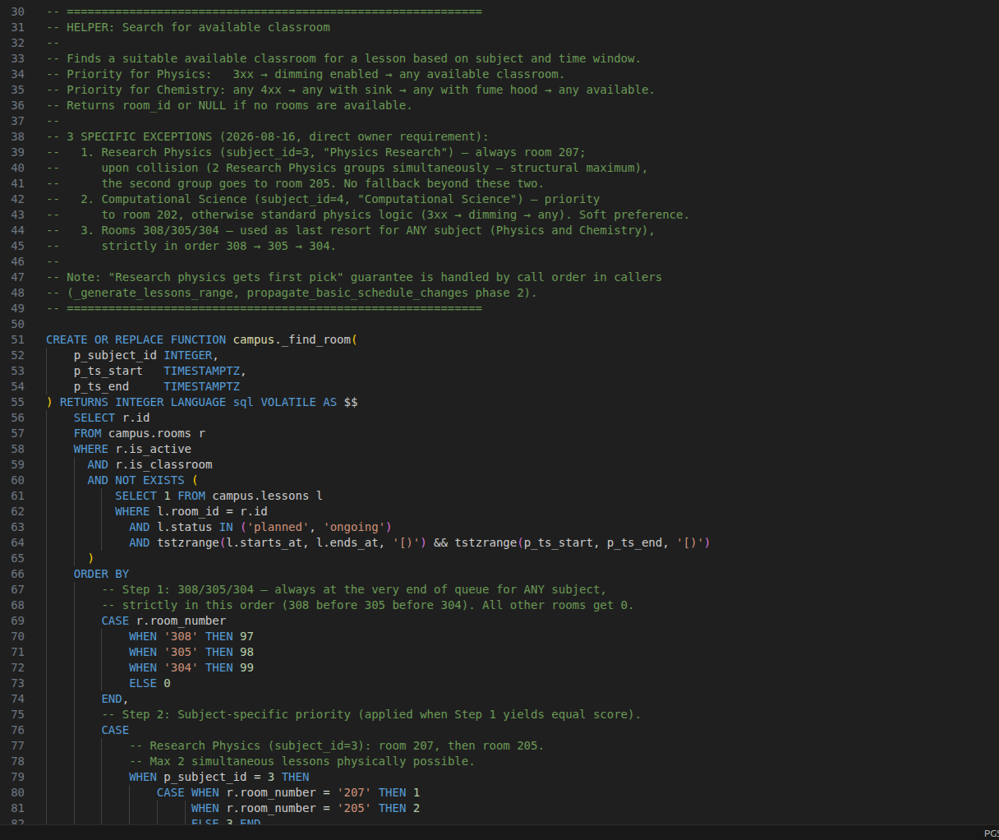
campus._find_room() — room-priority rules for physics and chemistry are
documented and encoded directly in the query.
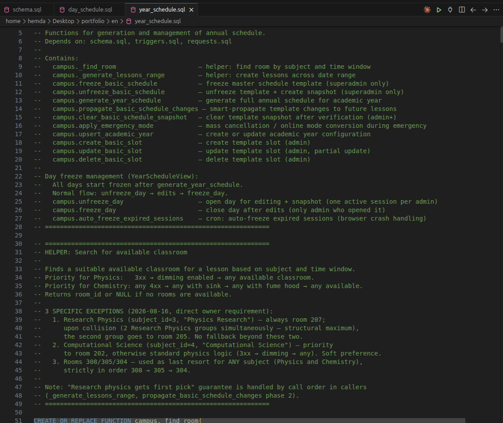
year_schedule.sql — the file header explains the purpose of every key
function and the freeze / unfreeze day flow.
Results
The system has been running successfully in production since August 2026
Handles the center's real daily operational load
Critical invariants (schedule conflicts, access rights, audit) are enforced at the
database level
A complete, immutable history of every significant action